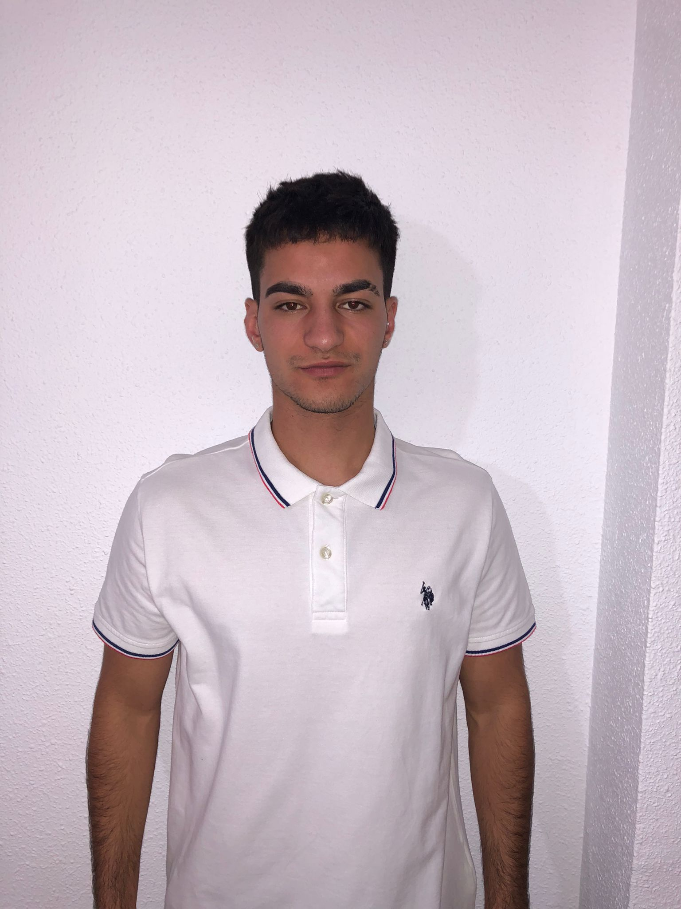

Ismael García
Desarrollador Web Junior de Valencia, España 🇪🇸. En formación y apasionado por el desarrollo de aplicaciones web. Actualmente en búsqueda de oportunidades laborales donde contribuir con mis conocimientos y continuar aprendiendo.
Sobre mí
Trayectoria académica
CFGS Desarrollo Aplicaciones Web: IES Mestre Ramón Esteve ( 2023 - Actualmente )
CFGM Sistemas Microinformáticos y Redes: IES Mestre Ramón Esteve ( 2021 - 2023 )
Experiencia
AVF Smart Control | FP Dual
Junio 2024 - Julio 2024
- - Desarrollo y mantenimiento de páginas web usando PHP, mejorando la funcionalidad y experiencia del usuario.
- - Generación de informes personalizados con TCPDF (PHP), facilitando la gestión y visualización de datos.
- - Administración de BBDD para asegurar la integridad y disponibilidad de la información.
Ayto. Montserrat | Prácticas
Marzo 2023 - Junio 2023
- - Desarrollo y mantenimiento de páginas web con WordPress, optimizando la accesibilidad.
- - Montaje y mantenimiento de equipos, asegurando un correcto funcionamiento y aumentando su vida útil.
- - Administración y configuración de la red para mejorar la conectividad.
Proyectos
En proceso...